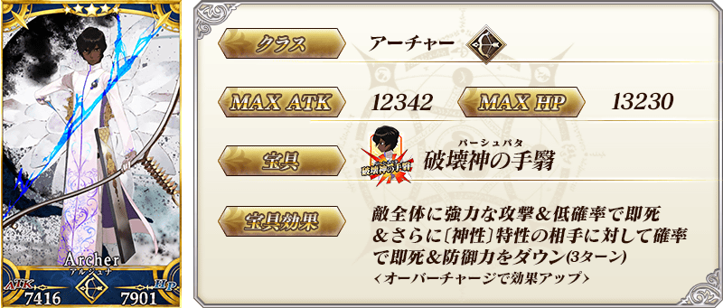
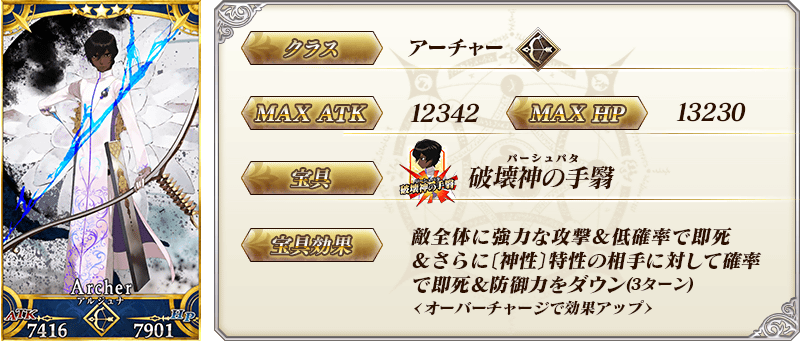
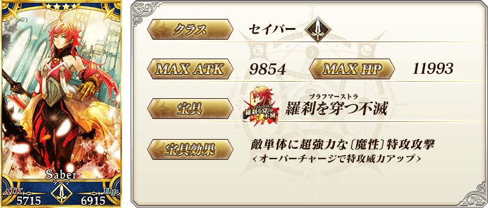
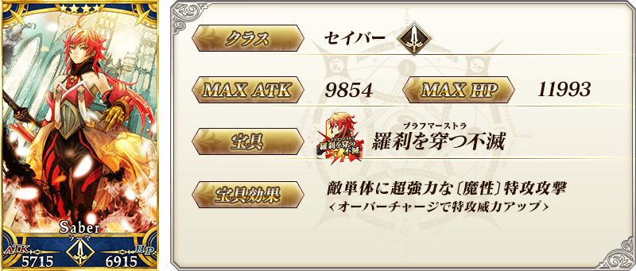

◆『「Lostbelt No.4 創世滅亡輪廻 宇迦淨土 黑色最終之神」開幕前夕Pick Up召喚』期間◆
期間:2019年6月7日(五) 17:00～6月21日(五) 11:59
舉辦期間限定『「Lostbelt No.4 創世滅亡輪廻 宇迦淨土 黑色最終之神」開幕前夕Pick Up召喚』！ ※未通過第2部 第3章「Lostbelt No.3 人智統合真國 SIN 紅之月下美人」的狀態也能進行『「Lostbelt No.4 創世滅亡輪廻 宇迦淨土 黑色最終之神」開幕前夕Pick Up召喚』。
這次為「★5(SSR)阿周那」「★4(SR)羅摩」Pick Up！
詳情請在聖晶石召喚畫面左下的召喚詳細確認。
◆有關從者的注意◆
※「★5(SSR)阿周那」「★4(SR)羅摩」在Pick Up期間結束後仍會在故事召喚被抽出。
Pick Up期間中，Pick Up從者的出現機率提升！
10次召喚中確定1張★4(SR)以上和確定1位★3(R)以上的從者！ ※確定★4(SR)以上包含從者和概念禮裝。 ※本頁面皆為開發中圖片。會有與實際圖片相異的情況。
「★5(SSR)阿周那」「★4(SR)羅摩」的動作決定翻新！
「★5(SSR)阿周那」「★4(SR)羅摩」的戰鬥動作及寶具演出的翻新決定了！
翻新動作的公開及實裝預定是主線關卡第2部 第4章「Lostbelt No.4 創世滅亡輪廻 宇迦淨土 黑色最終之神」開幕時。
時間等詳情會日後發表。
 
※上述「★5(SSR)阿周那」的卡面為靈基再臨第2階段。

※上述「★5(SSR)阿周那」的卡面為靈基再臨第2階段。
 
※上述「★4(SR)羅摩」的卡面為靈基再臨第2階段。

※上述「★4(SR)羅摩」的卡面為靈基再臨第2階段。
 ※上述「★5(SSR)阿周那」的立繪為靈基再臨第2階段。
※上述「★5(SSR)阿周那」的立繪為靈基再臨第2階段。
介紹「★5(SSR)阿周那」「★4(SR)羅摩」的寶具演出！
在「Fate/Grand Order」官方網站內的公告中，以影片公開寶具演出，敬請確認。
其他還有，「Lostbelt No.4 創世滅亡輪廻 宇迦淨土 黑色最終之神」開幕前夕宣傳活動同時舉辦！
關於詳情，請自下述橫幅確認。
■「Lostbelt No.4 創世滅亡輪廻 宇迦淨土 黑色最終之神」開幕前夕宣傳活動詳細情報